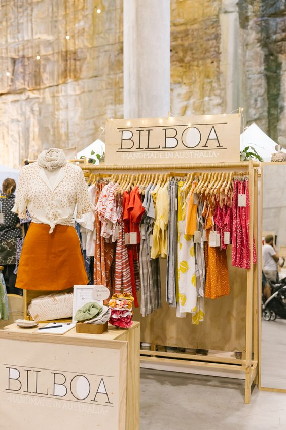
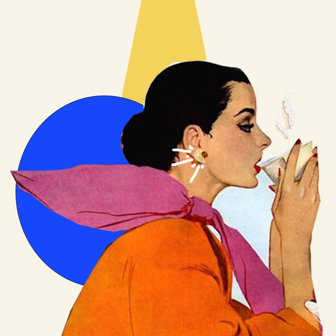
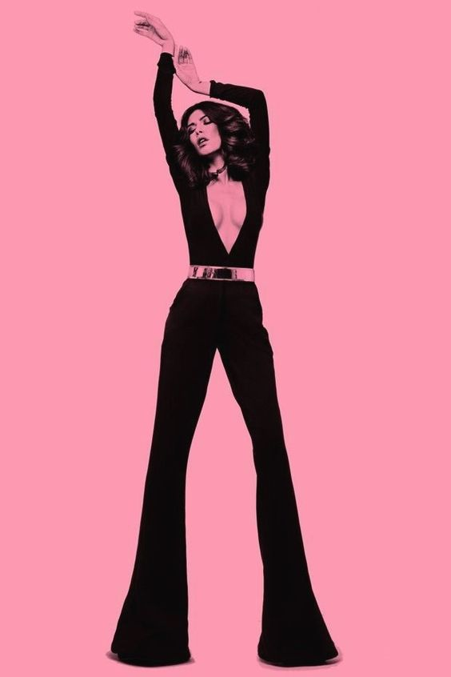
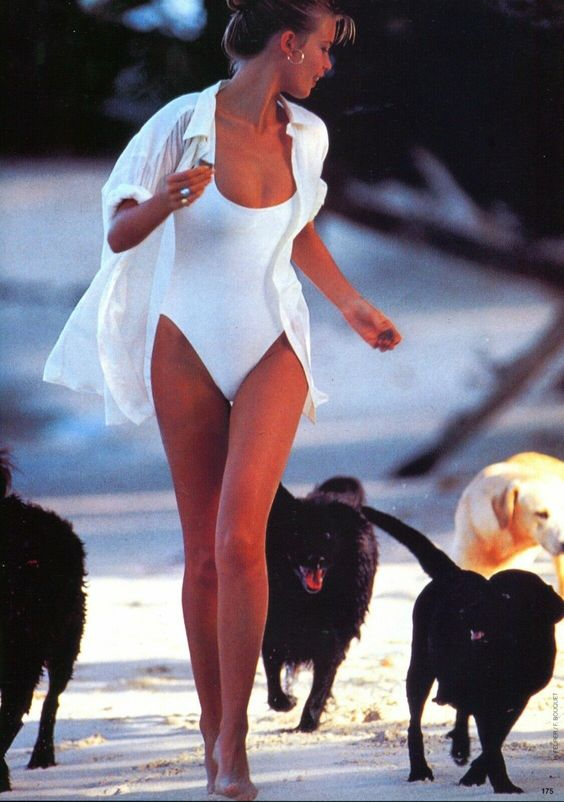
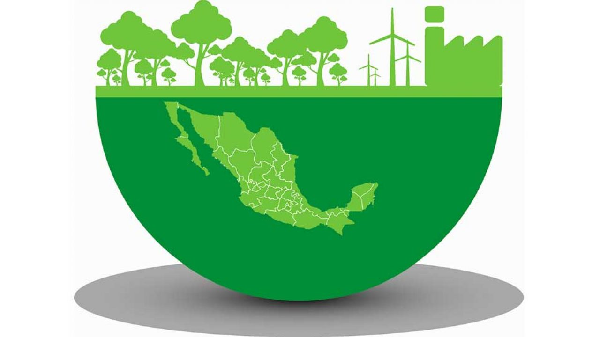

Nuestro bazar |
|
|
Nuestro Objetivo
es más preocupante por ser tan demandada y contaminante.
Esta página cambiará tu estilo de la mejor manera y es ecofriendly.
Tenemos un amplio catálogo
Para todas las edades
Para todos los géneros


|
|
GORROS
ARETES
ANILLOS
COLLARES
|
| |
BLUSAS
CHALECOS
TOPS DE PLAYA
|
| |
CHANCLAS
TACONES
BOTAS
|
FORMALES
|
|
ACAMPANADOS
DENIM
ESTAMPADOS
HIGH WAISTED
|

El término moda orgánica o ropa ecológica se refiere a las prendas fabricadas con fibras cultivadas siguiendo los estándares de producción ecológica.
Durante muchos años ha habido confusión respecto al significado del término “ecológico” en la ropa. En 2002 se llegó a un acuerdo entre distintos sectores del mundo textil que dio como resultado La Norma Textil Orgánica Global (GOTS, Global Organic Textile Standar).
Esta norma define los requerimientos reconocidos globalmente para asegurar la condición orgánica de los productos textiles, desde la obtención de la materia prima, procesamiento de la fibra, fabricación, empaquetado, etiquetado hasta la distribución, a través de una producción responsable con el medio ambiente y el medio social, a fin de que el producto final ofrezca al consumidor la necesaria seguridad y credibilidad.
Estos productos también son comercializados de manera justa lo que implica mejores condiciones para los trabajadores del sector tales como mejores sueldos y una menor exposición a productos químicos peligrosos para su salud.
La relación inversa no ha de cumplirse necesariamente, es decir las normas de comercio justo (Fair Trade Standar) no exigen que las fibras sean ecológicas aunque si prohíben el uso de los pesticidas y fertilizantes considerados más dañinos.
Respecto al término moda sostenible hay muchas maneras de definir la sostenibilidad. La definición de Brundtland en 1987 definió el desarrollo sostenible como aquel que satisface las necesidades del presente sin comprometer la habilidad de generaciones futuras de satisfacer sus propias necesidades.
La moda sostenible comparte con la ecológica la preocupación por el medio ambiente. Los materiales sostenibles se fabrican a partir de materiales reciclados por ejemplo, sin embargo no implica que procedan de materiales ecológicos. El término sostenible en moda no se refiere únicamente al producto sino a todo su ciclo de vida (materias primas, fabricación, manufactura, terminado, transporte, venta y usos).
Implica que durante toda la existencia de una prenda se han seguido criterios que conllevan conservación de los recursos, uso de materiales que faciliten el reciclaje, uso de energías renovables, durabilidad de las prendas, mejora de las condiciones de los trabajadores y mejoras de la eficiencia en el transporte entre otros.
En nuestro bazar entendemos que la moda sostenible ha de ser también ecológica, y que la moda ecológica conlleva sostenibilidad, por tanto en nuestra marca de ropa confluyen los dos conceptos.
Elaboramos las prendas con tejidos ecológicos certificados GOTS creando prendas de calidad y duraderas, respetuosas con el medio ambiente y con tu piel, además de tener un diseño único y original.
Visita su página para enterarte mejor
de el manejo de la ropa y cómo ayuda esto
a las personas y disminuye el impacto ecológico
EL CAMBIO CLIMÁTICO ESTA EN NUESTRAS MANOS
¿Qué otras campañas hay y cómo apoyar?
¡Conoce a nuestros asociados!

¿Quiénes somos?
Somos una empresa mexicana enfocada en la moda ecológica y el empoderamiento femenino
pero principalmenete en el cuidado sustentable del medio ambiente.
|
|
|
100% Responsables |
|
|
|

|
 |
|
|
|

|
|  |
|
¡Contáctanos!
@NUESTROBAZAR/Facebook @NUESTROBAZAR/instagram @NUESTROBAZAR/twitter @NUESTROBAZAR/pinterest @NUESTROBAZAR/youtube
@NUESTROBAZAR WHATSAPP


|